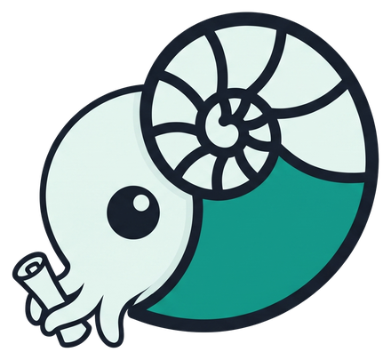
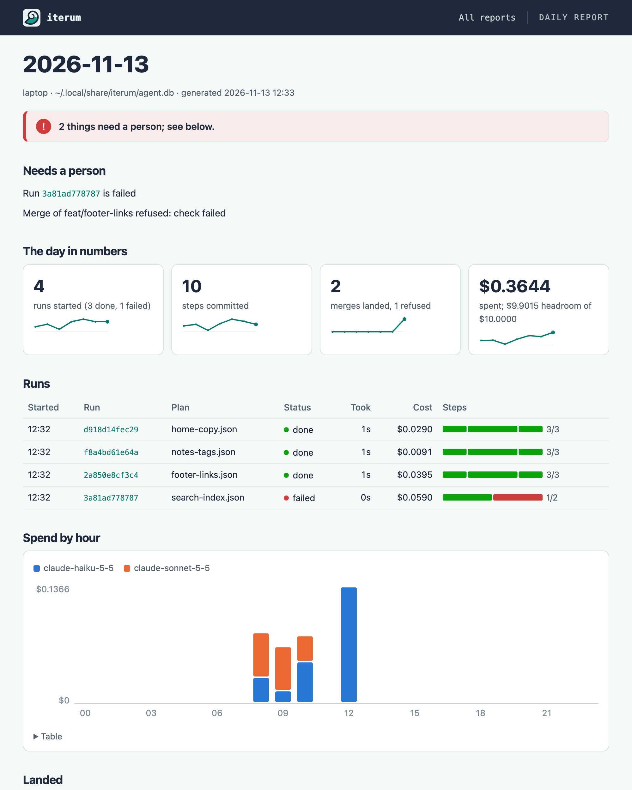
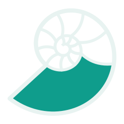

Iterum lets Claude Code agents work on your projects while you sleep. It keeps them from editing the same files or spending past your limit, records every step in a log they can't rewrite, and in the morning shows you what got done, what failed and what it cost.

agent.db, holds everything.Why you need it
"What did it actually do?"
Agents change state faster than you can review it, and a change nobody recorded only shows up when it breaks something. Iterum records every run step, queue task, file claim and merge as an event in an append-only ledger, where triggers reject edits and deletes. A drift check fails when knowledge is written without an event to explain it.
"It crashed at step 14."
A long run fails partway through, and you either start over or guess where it stopped. Iterum writes each step down before it runs, so a resumed run skips the steps already committed and runs the rest.
"Two machines, two agents, one repo."
Parallel agents overwrite each other's work, and a stalled worker can wake up and write over newer changes. Iterum gives workers time-limited leases and refuses a stale worker's writes, and merges a branch only while its run still holds a claim on every file it changed.
The drift check exits 1, so a hook fails. Its rebuild also puts the claim back to nothing.
Who it's for: solo developers who want Claude Code agents working on their projects overnight.
How it works
agent.db separates what's true now from what happened and from what you've concluded. Mix them and you can't tell which to trust.
runs · steps · tasks · claims
Mutable and local to one machine. Answers "what is true right now?"
events
Append-only. Every event gets a UUIDv7 and the name of the device that wrote it.
knowledge
A projection of the ledger. Wipe it and rebuild it from events at any time.
fleet/doctor.py
Checks execution, tooling, context, lifecycle, observability, verification and governance, and writes its findings to harness-audit.json.
fleet/project.py
Rebuilds knowledge and exits 1 on drift, so a hook can catch unrecorded writes.
fleet/sync.py
One command shares events between your machines through a private git repo.
fleet/run.py
Every step is written down before it runs. Kill a run mid-step, resume it, and it skips the steps already committed.
fleet/queue.py
Queue tonight’s plans with iterum add. A worker runs each on its own branch, commits what a failed one left there, and stops rather than start on uncommitted changes. Workers lease tasks with a fence, so a stale worker changes nothing; failed tasks wait in a dead-letter queue.
fleet/merge.py
A branch lands only while its run holds a live claim on every file it changed. With --check, it first runs a command, such as your build, on the merged result and refuses if it fails.
fleet/replay.py · eval.py
Replays a recorded run through the real run and queue code, with no model and no shell. Save a run as a case, and the suite fails when a change makes it end differently.
fleet/governor.py · telemetry.py
One ceiling for the whole fleet, summed from Claude Code's own telemetry. Once it is reached, runs stop before their next step and workers before their next task, and a stopped run can resume. Before a night, set a limit and reset the count; in the morning, iterum budget shows what the night cost.
fleet/run.py · gate.py
A plan step can be a Claude Code prompt. It runs only with --allow-claude and a dollar cap, gets only the Read, Edit and Write tools, and a hook refuses any edit to a file another run has claimed.
plugins/iterum · /iterum:fleet-plan
A Claude Code plugin. Describe a feature in one sentence; it asks until nothing is open, writes the plan, a check and a plain-words plan document, proves the check fails today, and dry-runs the plan for free before asking to spend anything.
fleet/run.py --fix-retries
When the build or check fails after a prompt step, the error goes back into the prompt and the step runs again, a set number of times, each under its cap. The check reports every miss, so a retry sees them all.
fleet/sweep.py
Runs each plan several times in rotated order, each on its own branch, and reports pass rate beside cost. A run passes only if every step does, including the plan's own checks, so a check on the output can fail it.
fleet/approve.py
An irreversible action waits for a recorded human decision, bound to its exact parameters, and a restart does not ask again. A freeze stops workers claiming new tasks. Nothing calls the gate yet.
fleet/canary.py
Flags recent runs whose events, seconds or cost per run moved away from the day before. It catches change, not wrong output, and a fleet that got cheaper and faster overnight is worth a look.
Rebuild, don't trust
Knowledge is a projection. iterum project throws it away, rebuilds it from events and compares fingerprints. A mismatch means something wrote knowledge without recording why.
Reports
One command turns the ledger into a page you can read over coffee: whether anything needs you, what ran, what it cost, and what landed. It opens offline, prints to PDF, and nothing leaves your machine.

Example data. More in the guide.
A budget for the night
Set a limit, reset the count, start a worker. Each task's prompt steps are capped on their own, and the worker stops claiming work once the night's spend reaches the limit. In the morning one command says what the night cost.
Example data. More in the guide.

Sync across devices
Each machine keeps its own agent.db. Only events move, as plain text files in a private git repo you control.
Copying a live SQLite file can corrupt it. Text files of events can't.
Each machine writes only its own events-<device>.jsonl, so git never has a conflict to resolve.
Events are never edited. Import skips ones it already has, so running it twice changes nothing.
Export never removes an event, so a rebuilt machine can't wipe its own history.
Export, commit, pull, push, import and rebuild, in one go. The sync guide walks through setup.
Meet Septa
A nautilus grows by building a new chamber and sealing the old one with a wall called a septum. It never reopens a chamber. Iterum's ledger works the same way: every event gets a new chamber, and the old ones stay sealed.
Get started
One uv tool install puts the iterum command on your path. Put ITERUM_DEVICE in your shell profile so every new terminal has it.
$ export ITERUM_DEVICE=laptop # unique per machine $ git clone https://github.com/shaynemeyer/iterum.git $ cd iterum $ uv tool install --editable . # installs the iterum command $ iterum doctor # audit this machine $ uv run scripts/seed-ledger.py # record the audit in agent.db $ iterum project # rebuild knowledge from the ledger
Then follow the user guide, read the README, and the sync guide to add more machines.